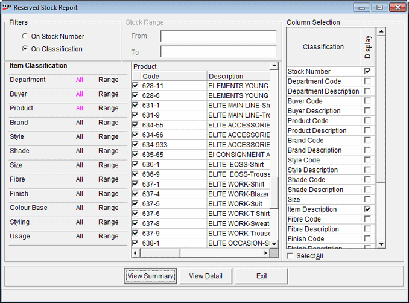

The Reserved Stock Report provides information on the stock availability along with the current balance and transaction-wise reserved stock (Packing slip, pallet Slip, Sales DC). This report clarifies the stock in reserve and actual stock available for disposal.
How to reach: Reports > Stock > Reserved Stock
The Reserved Stock Report window is displayed.

Filters
On Stock Number: Select to view the report based on stock numbers.
Stock Range: Enter the From and To stock numbers.
On Classification: Select to view the report based on Item Classifications.
The left most list gives all the item classifications enabled in the system parameters. On selection of each classification, the corresponding lookup values catalogued are displayed under Code and Description. You can select/ deselect the values as required. If you have made partial selection of values, the corresponding item classification will be marked as half checked (grayed). However, you cannot have an empty list for any item classification.
Column Selection
This filter shows the codes and descriptions columns for the attributes. Select the columns to be displayed. By default, Stock Number is selected.
Select All: Click to select all the columns.